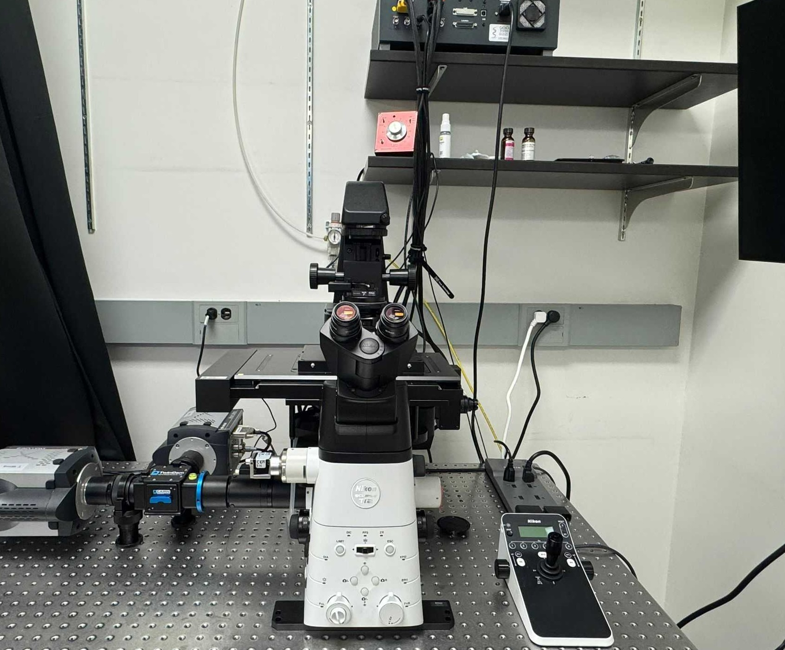
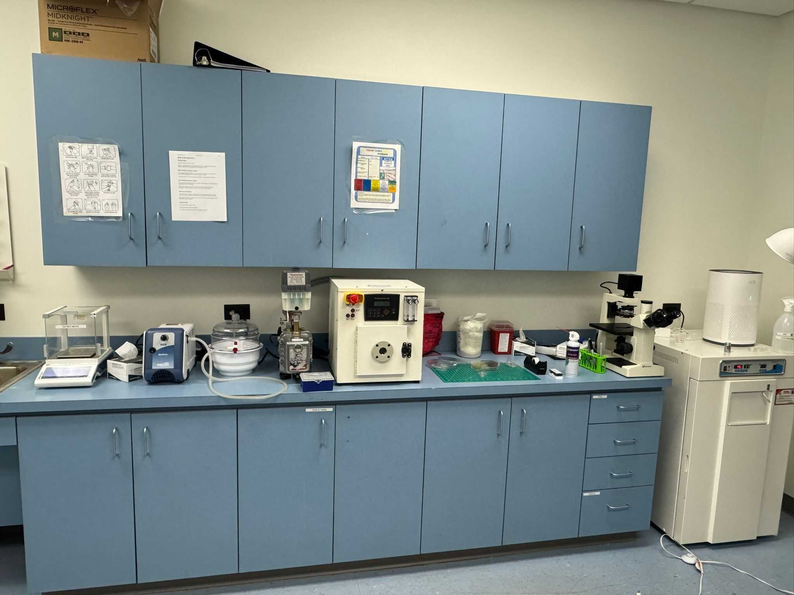
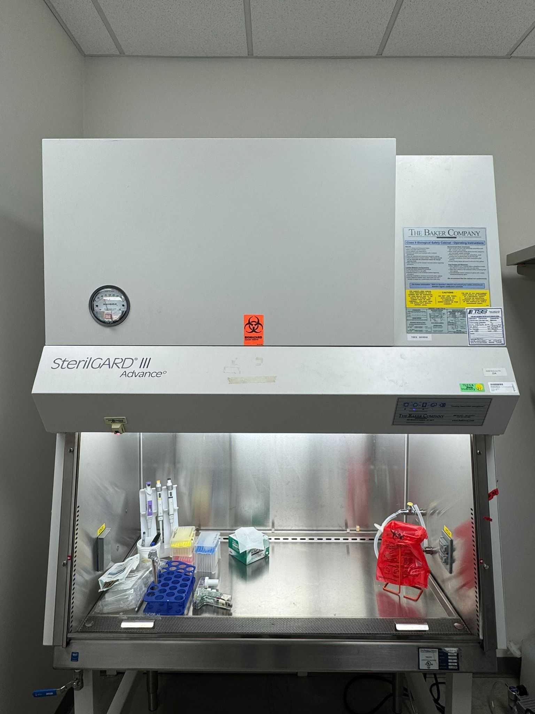

LAB FACILITIES
Instruments & capabilities
State-of-the-art microscopy, microfluidics, and molecular biology infrastructure.

Microscopy
- 7 microscopes incl. Nikon Ti2-E with Ring-TIRF illumination
- Optical tweezers-equipped Nikon Ti-E
- FRET on live cells; single-photon detection (Hamamatsu PMTs)
- Darkfield, phase, FRAP capabilities

Microfluidics
- Custom microfluidic device fabrication
- Integrated with 3D-printing workflows

Molecular Biology & Culturing
- Genome editing (λ-Red homologous recombineering)
- Plasmid extraction & protein purification
- Molecular cloning; PCR / gel electrophoresis / electroporation
- BSL culturing facilities

Micro-manipulation & Micro-gravity
- TransferMan 4r & FemtoJet 4i microinjector
- Sutter P-1000 micropipette puller
- Synthecon RCCS-4HD rotary cell culture (microgravity)
Pushkar P. Lele
Woods Family Professor & Chancellor's Fellow
Artie McFerrin Department of Chemical Engineering,
Texas A&M University
College Station, TX 77843-3122
Texas A&M University
College Station, TX 77843-3122
Phone : (979)-458-2790
Location
University Drive & Spence St,
Texas A&M University
College Station, TX 77843-3122
Texas A&M University
College Station, TX 77843-3122
Navigation
Home
Research
Publications
Members
Lab facilities
Visit Department
Artie McFerrin Department of Chemical Engineering
Copyright © 2026 Pushkar Lele Lab.